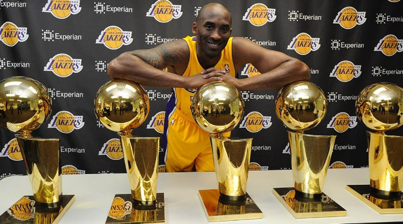

La leyenda viviente
Kobre Bryant
Kobe Bryant

Es un exjugador estadounidense de baloncesto que disputó veinte temporadas en la NBA,
todas ellas en Los Angeles Lakers, desde 1996 hasta 2016. Es hijo del también exjugador de la NBA Joe Bryant.
A lo largo de su carrera consigui multiples campeonatos de la nba y muchos titulos defensivos entre otros mas,
lo que definio a kobe bryant en toda su carrera fue su instinto "asesino"(se le llamaba asi ya que en los momentos
cruciales de los partidos, este siempre tomaba las deciones de anotar). este es conocido como uno de los jugador mas
importantes de los ultimos 20 años y uno futuro salon de la fama del baloncesto.
kobe bryant sufrio una lesion en su talon de aquiles en 2013, desde ese dia nunca volvio a ser el mismo jugador, para el ultimo partido de su
carrera hizo historia al anotar 60 puntos y se convirtio en el unico jugador de la historia en tener unca actuacion de es calibre en su
ultimo partido.
logros y meritos
En su carrera kobe bryant ha ganado un total de 5 campeonatos de la nba y un total de 2 mvp de las finales (2009,2010),
gano 1 mvp de temporada regular(2008), dos veces maximo anotador de la nba(2006,2007),11 veces el mejor quintento de la nba,
4 veces mvp del juego de las estrellas, 9 veces mejor quinteto defensivo, campeon del concurso de mates(1997)
18 veces invitado al juego de las estrellas.
Otros logros importantes son sus records de partidos, unico jugador de la historia en anotar 81 puntos, unico jugador en
anotar 50 puntos o mas en un mes consecutivamente, maximo anotador de todos los tiempos en la historia de los lakers
y de los unicos jugadores en jugar 20 temporadas consecutivas con el mismo equipo desde su inicio, tuvo el record de triples con 12 triples anotados
pero ese titulo se le fue arrebatado por stephen curry con 13 triples.
Kobe bryant y sus campeonatos.

| campeonatos |
años |
| 1 |
2000 |
| 1 |
2001 |
| 1 |
2002 |
| 1 |
2009 |
| 1 |
2010 |